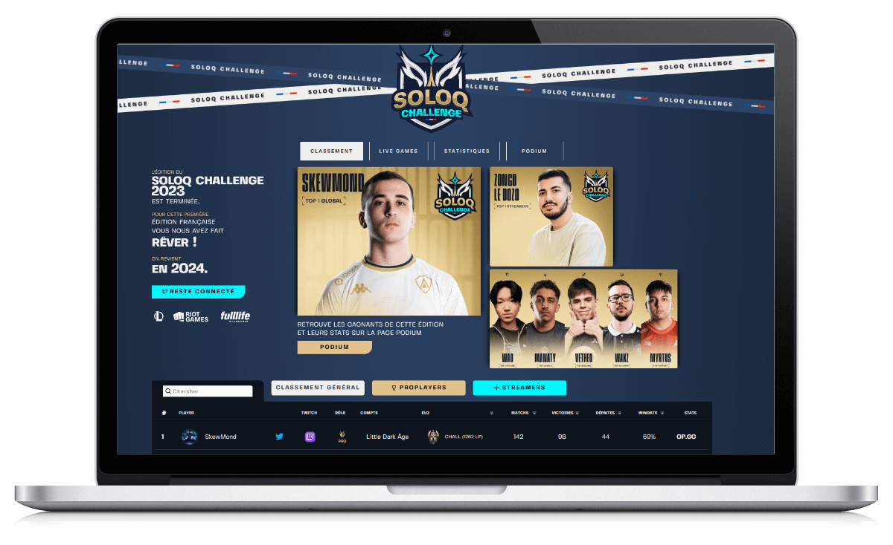
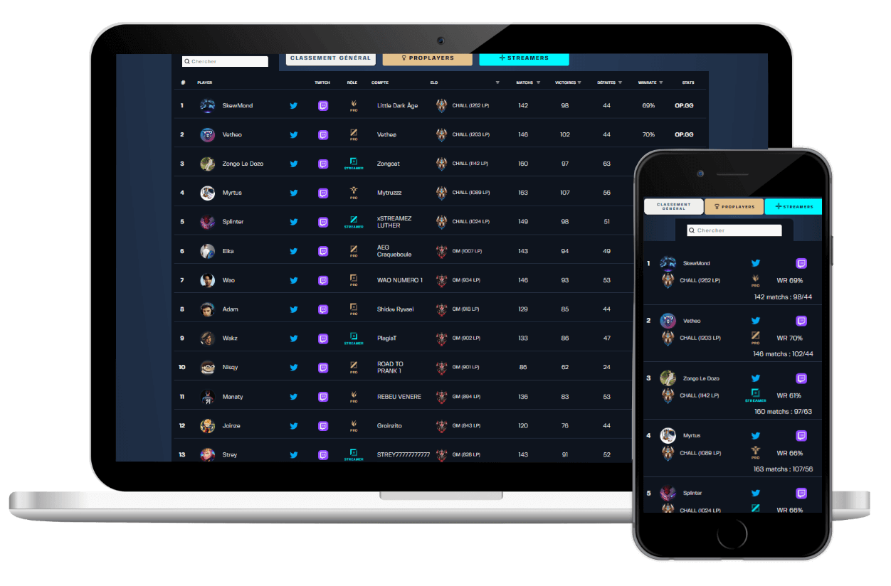

SoloQChallenge France est un événement à l'initiative de Trayton, en partenariat avec Riot Games et Fulllife. Trayton est streamer et commentateur e-sport du jeu vidéo League of Legends de l'éditeur Riot Games.
60 joueurs francophones, streamers et joueurs professionnels, s'affrontent en SoloQ sur la faille de l'invocateur pour gagner plus de 10 000€ de Cashprice pendant trois semaines. L’événement est streamé par les participants et Trayton.
Le site soloqchallenge.fr a été développé pour supporter l’événement, il devait pouvoir accueillir un classement en temps réel avec des statistiques, un lien vers le Twitch de chaque participants, la possibilité de voir s'il était en ligne, le lien vers ses réseaux sociaux et son rang dans le jeu.
Chaque streamer en ligne pouvait être mis en avant sur le site de manière aléatoire via un encart Twitch sur le site.
L'onglet "Lives Games" permettaient de voir le détail des parties en cours : temps de parties, champions joués, participants à la parties…
Le site web était utilisé par les viewers pour suivre l'événement et les streamer pour vérifier leur rangs et statistiques de jeu.
Un onglet statistiques étaient mis à jour en temps réels pour plus d’interactivités : nombres de kills, de mort, meilleur KDA, champions les plus joués…
C'est en tout : 5400 parties jouées lors de l’événement ainsi que 92 jours 8 heures de jeu.
Un podium provisoire pendant le soloqchallenge qui affichait en temps réels les trois gagnants en tête pour chaque catégories de prix ainsi qu'à la fin de l'événement à minuit, tous les vainqueurs de chaque catégories, avec un résultat serré jusqu'à la fin.